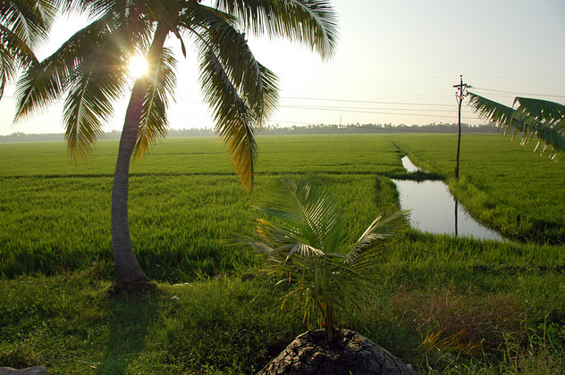

Die äußerst geschäftstüchtigen Kerle des Gowri Hotels "can arrange everything". Da wir die Backwaters und das zauberhafte Alleppy zu Fuß nicht gefunden haben, war der nächste Versuch ein Kanuausflug. Und tatsächlich, nachdem wir uns an einer nicht enden wollenden Reihe vertäuter Hausboote haben vorbei rudern lassen, wurden wir schon von den Kanälen und Seitenkanälen und Seitennebenkanälen verschluckt. Die Ufer sind alle befestigt und mit vielen kleinen Häuschen besetzt, vor denen jeweils uralte Inder sitzen und dabei zusehen, wie weniger alte Inderinnen am Kanal den Abwasch machen.
Alis Geburtstag haben wir standesgemäß auf einem luxeriösen Hausboot verbracht. Einen ganzen Tag lang wurden wir von einer dreiköpfigen Besatzung durch die Kanäle der Backwaters geschippert und dabei ausgiebig gemästet. Nach Sonnenuntergang wurde uns die (angekündigte) "Überaschungstorte" präsentiert. Das Tischfeuerwerk war umwerfend: Eine kleine Lotusblüte hat kurz Feuer gespuckt und sich dann ausgeklappt, um ihre Kerzen zu präsentieren, die nicht alle angegangen sind. Aber ein kleiner Lautsprecher hat dabei so herzzerreißend schief Happy Birthday gespielt, dass die Optik zur Nebensache wurde. Unsere Versuche, den Lotus durch Sabotage zum Schweigen zu bringen, wurden leider vom eifrigen Koch vereitelt, der ihn stattdessen wieder repariert hat.
Unseren letzten Tag in Aleppy hat Indian Airlines uns gründlich verdorben, indem sie unseren Flug nach Madras gecancelt haben. So haben wir den halben Tag damit verplempert, ihnen hinterher zu telefonieren und uns einen neuen Flug zu besorgen. Eine weitere Tour zum wunderbaren Mahari Beach mit unserem Gästebuch-Rikschafahrer hat uns getröstet.